26. Transient Land Use and Land Cover Change¶
CLM includes a treatment of mass and energy fluxes associated with prescribed temporal land use and land cover change (LULCC). The model uses an annual time series of the spatial distribution of the natural and crop land units of each grid cell, in combination with the distribution of PFTs and CFTs that exist in those land units. Additional land use is prescribed through annual crop specific management of nitrogen fertilizer and irrigation described further in Chapter 25, and through wood harvest on tree PFTs. For changes in the distributions of natural and crop vegetation CLM diagnoses the change in area of the PFTs and CFTs on January 1st of each model year and then performs mass and energy balance accounting necessary to represent the expansion and contraction of the PFT and CFT areas. The biogeophysical impacts of LULCC are simulated through changes in surface properties which in turn impact the surface albedo, hydrology, and roughness which then impact fluxes of energy, moisture and momentum to the atmosphere under the altered properties. Additionally changes in energy and moisture associated with changes in the natural and crop vegetation distribution are accounted for through small fluxes to the atmosphere. The biogeochemical impacts of LULCC are simulated through changes in CLM carbon pools and fluxes as shown in Figure xx.x and described further in Chapter 16.
26.1. Annual Transient Land Use and Land Cover Data and Time Interpolation¶
The changes in area over time associated with changes in natural and crop vegetation and the land use on that vegetation are prescribed through a forcing dataset, referred to here as the landuse.timeseries dataset. The landuse.timeseries dataset consists of an annual time series of global grids, where each annual time slice describes the fractional area occupied by all PFTs and CFTs along with the nitrogen fertilizer and irrigation fraction of each crop CFT, and the annual wood harvest applied to tree PFTs. Changes in area of PFTs and CFTs are performed annually on the first time step of January 1st of the year. Fertilizer application, irrigation and wood harvest for each PFT and CFT are performed at each model time step depending on rules from the crop and natural vegetation phenology models. The irrigation fraction is set annually however fertlizer application and wood harvest are set from a time-interpolation of the application rates from the two bracketing annual time slices in the landuse.timeseries dataset.
As a special case, when the time dimension of the landuse.timeseries dataset starts at a later year than the current model time step, the first time slice from the landuse.timeseries dataset is used to represent the current time step PFT and CFT fractional area distributions. Similarly, when the time dimension of the landuse.timeseries dataset stops at an earlier year than the current model time step, the last time slice of the landuse.timeseries dataset is used. Thus, the simulation will have invariant representations of PFT and CFT distributions through time for the periods prior to and following the time duration of the landuse.timeseries dataset, with transient PFT and CFT distributions during the period covered by the landuse.timeseries dataset.
The following equations capture this logic, where 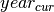 is
the calendar year for the current timestep,
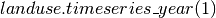 and
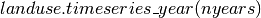 are the first and last calendar years in
the landuse.timeseries dataset, respectively, 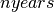 is the number of
years in the landuse.timeseries dataset, 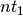 and 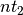
 are the two bracketing years used in the interpolation
algorithm, and
are the two bracketing years used in the interpolation
algorithm, and  is the index value for the
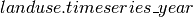 array corresponding to
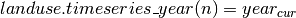 :
is the index value for the
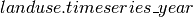 array corresponding to
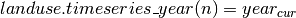 :
(1)¶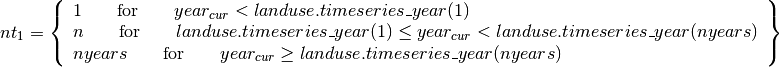
(2)¶
Interpolation of fertilizer and wood harvest rates between annual time slices in the landuse.timeseries
dataset uses a simple linear algorithm, based on the conversion of the
current time step information into a floating-point value for the number
of calendar days since January 1 of the current model year
(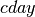). The interpolation weight for the current time step
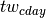 is
(3)¶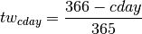
where the numerator is 366 instead of 365 because the time manager
function for CLM returns a value of 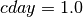 for midnight
Greenwich mean time on January 1. With weights 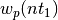
and 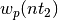obtained from the landuse.timeseries dataset for fertilizer and wood harvest
p at the bracketing annual time slices
and , the interpolated
application rate for the current time step (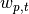 ) is
(4)¶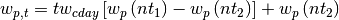
The form of this equation is designed to improve roundoff accuracy
performance, and guarantees stays in the range [0,1].
Note that values for , ,
and are fractional weights at the
column level of the subgrid hierarchy.
The change in weight for a fertilizer or wood harvest rate between the current and previous time steps (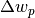 ) is
(5)¶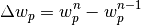
where n denotes the current time step. The rate of application increases for and decreases for 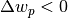.
26.2. Mass and Energy Conservation¶
Mass conservation is maintained across PFT and CFT weight transitions by summing up all the carbon, nitrogen, water and energy state variables to get the total vegetated land units value before (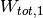 ) and after (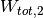 ) the new PFT and CFT weights are calculated. Transitions are performed on above ground variables first and then at the land unit level for below ground variables second. For example the hydrological balance is calculated, is
(6)¶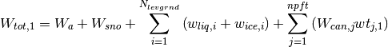
where  is the aquifer water,
is the aquifer water,  is the snow
water,
is the snow
water,  and
and  are the liquid and ice
soil water contents, 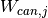 is the canopy water content for
PFT and CFT 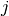, and 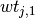 is the PFT or CFT weight for
. For the situation where PFT and CFT weights are changing, any difference
between and are due to
differences in the total canopy water before and after the PFT and CFT weight
change. To ensure conservation, the typically very small
difference between and is
subtracted from the grid cell runoff
are the liquid and ice
soil water contents, 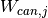 is the canopy water content for
PFT and CFT 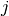, and 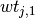 is the PFT or CFT weight for
. For the situation where PFT and CFT weights are changing, any difference
between and are due to
differences in the total canopy water before and after the PFT and CFT weight
change. To ensure conservation, the typically very small
difference between and is
subtracted from the grid cell runoff
(7)¶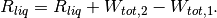
Total energy is unperturbed in this case and therefore an energy conservation treatment is not required. Changing the area of natural and crop land units in association with the change in PFTs and CFTs results in changes in the soil/snow columns and land unit area. To address these additional changes, conservation of mass and energy among the soil/snow columns and land units is performed as a secondary calculation once all above ground PFT and CFT changes have been done.
26.3. Annual Transient Land Cover Dataset Development¶
This section describes the development of the landuse.timeseries dataset. Development of this dataset involves the translation of harmonized datasets of LULCC for the historical period and for the different Shared Socioeconomic Pathway (SSP) - Representative Concentration Pathway (RCP) scenarios. Additionally, LULCC time series are to be generated for the Last Millennium and the extension beyond 2100 experiments of CMIP6.
26.3.1. LUH2 Transient Land Use and Land Cover Change Dataset¶
To coordinate the processing and consistency of LULCC data between the historical period (1850-2015) and the six SSP-RCP (2016-2100) scenarios derived from Integrated Assessment Models (IAM), the University of Maryland and the University of New Hampshire research groups (Louise Chini, George Hurtt, Steve Frolking and Ritvik Sahajpal; luh.umd.edu) produced a new version of the Land Use Harmonized version 2 (LUH2) transient datasets for use with Earth System Model simulations. The new data sets are the product of the Land Use Model Intercomparison Project (LUMIP; https://cmip.ucar.edu/lumip) as part of the Coupled Model Intercomparison Project 6 (CMIP6). The historical component of the transient LULCC dataset has agriculture and urban land use based on HYDE 3.2 with wood harvest based on FAO, Landsat and other sources, for the period 850-2015. The SSP-RCP transient LULCC components (2015-2100) are referred to as the LUH2 Future Scenario datasets. The LULCC information is provided at 0.25 degree grid resolution and includes fractional grid cell coverage by the 12 land units of:
Primary Forest, Secondary Forest, Primary Non-Forest, Secondary Non-Forest,
Pasture, Rangeland, Urban,
C3 Annual Crop, C4 Annual Crop, C3 Perennial Crop, C4 Perennial Crop, and C3 Nitrogen Fixing Crop.
The new land unit format is an improvement on the CMIP5 LULCC datasets as they: provide Forest and Non Forest information in combination with Primary and Secondary land; differentiate between Pasture and Rangelands for grazing livestock; and specify annual details on the types of Crops grown and management practices applied in each grid cell. Like the CMIP5 LULCC datasets Primary vegetation represents the fractional area of a grid cell with vegetation undisturbed by human activities. Secondary vegetation represents vegetated areas that have recovered from some human disturbance; this could include re-vegetation of pasture and crop areas as well as primary vegetation areas that have been logged. In this manner the land units can change through deforestation from Forested to Non Forested land and in the opposite direction from Non Forested to Forested land through reforestation or afforestation without going through the Crop, Pasture or Rangeland states.
The LUH2 dataset provides a time series of land cover states as well as a transition matrices that describes the annual fraction of land that is transformed from one land unit category to another (e.g. Primary Forest to C3 Annual Crop, Pasture to C3 Perrenial Crop, etc.; Lawrence et al. 2016). Included in these transition matrices is the total conversion of one land cover type to another referred to as Gross LULCC. This value can be larger than the sum of the changes in the state of a land unit from one time period to the next known as the Net LULCC. This difference is possible as land unit changes can occur both from the land unit and to the land unit at the same time. An example of this difference occurs with shifting cultivation where Secondary Forest can be converted to C3 Annual Crop at the same time as C3 Annual Crop is abandoned to Secondary Forest.
The transition matrices also provide harmonized prescriptions of wood harvest both in area of the grid cell harvested and in the amount of biomass carbon harvested. The wood harvest biomass amount includes a 30% slash component inline with the CMIP5 LULCC data described in (Hurtt et al. 2011). The harvest area and carbon amounts are prescribed for the five classes of: Primary Forest, Primary Non-Forest, Secondary Mature Forest, Secondary Young Forest, and Secondary Non-Forest.
Additional land use management is prescribed on the Crop land units for nitrogen fertilization and irrigation equipped land. The fertilizer application and the the irrigation fraction is prescribed for each Crop land unit in a grid cell individually for each year of the time series. The wood harvest and crop management are both prescribed spatially on the same 0.25 degree grid as the land use class transitions.
26.3.2. Representing LUH2 Land Use and Land Cover Change in CLM5¶
To represent the LUH2 transient LULCC dataset in CLM5, the annual fractional composition of the twelve land units specified in the dataset needs to be faithfully represented with a corresponding PFT and CFT mosaics of CLM. CLM5 represents the land surface as a hierarchy of sub-grid types: glacier; lake; wetland; urban; vegetated land; and crop land. The vegetated land is further divided into a mosaic of Plant Functional Types (PFTs), while the crop land is divided into a mosaic of Crop Functional Types (CFTs).
To support this translation task the CLM5 Land Use Data tool has been built that extends the methods described in Lawrence et al (2012) to include all the new functionality of CMIP6 and CLM5 LULCC. The tool translates each of the LUH2 land units for a given year into fractional PFT and CFT values based on the current day CLM5 data for the land unit in that grid cell. The current day land unit descriptions are generated from from 1km resolution MODIS, MIRCA2000, ICESAT, AVHRR, SRTM, and CRU climate data products combined with reference year LUH2 land unit data, usually set to 2005. Where the land unit does not exist in a grid cell for the current day, the land unit description is generated from nearest neighbors with an inverse distance weighted search algorithm.
The Land Use Data tool produces raw vegetation, crop, and management data files which are combined with other raw land surface data to produce the CLM5 initial surface dataset and the dynamic landuse.timeseries dataset with the CLM5 mksurfdata_map tool. The schematic of this entire process from LUH2 time series and high resolution current day data to the output of CLM5 surface datasets from the mksurfdata_map tool is shown in Figure 21.2.
The methodology for creating the CLM5 transient PFT and CFT dataset is based on four steps which are applied across all of the historical and future time series. The first step involves generating the current day descriptions of natural and managed vegetation PFTs at 1km resolution from the global source datasets, and the current day description of crop CFTs at the 10km resolution from the MIRCA 2000 datasets. The second step combines the current day (2005) LUH2 land units with the current day CLM5 PFT and CFT distributions to get CLM5 land unit descriptions in either PFTs or CFTs at the LUH2 resolution of 0.25 degrees. The third step involves combining the LUH2 land unit time series with the CLM5 PFT and CFT descriptions for that land unit to generate the CLM5 raw PFT and CFT time series in the landuse.timeseries file. At this point in the process management information in terms of fertilizer, irrigation and wood harvest are added to the CLM5 PFT and CFT data to complete the CLM5 raw PFT and CFT files. The final step is to combine these files with the other raw CLM5 surface data files in the mksurfdata_map tool.

Figure 26.1 Schematic of land cover change impacts on CLM carbon pools and fluxes.

Figure 26.2 Schematic of translation of annual LUH2 land units to CLM5 plant and crop functional types.
Figure 26.3 Workflow of CLM5 Land Use Data Tool and Mksurfdata_map Tool